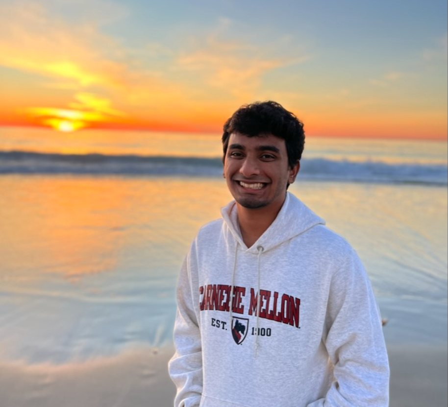

Hey, I'm Sharan!
I am a software engineer specializing in backend development and cloud infrastructure, having designed and built scalable, cloud-native solutions. My focus lies in improving reliability, visibility, and functionality for complex systems.
I enjoy working at the intersection of software engineering and infrastructure, whether it's developing backend services or architecting robust infrastructure systems.
In my free time, I enjoy watching Premier League football (I've supported Arsenal since 2007), going for a hike around the Bay Area and hanging out with my friends and family.